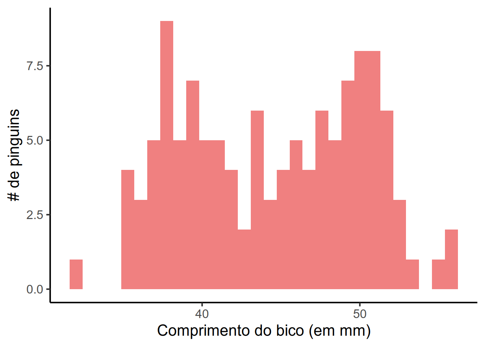
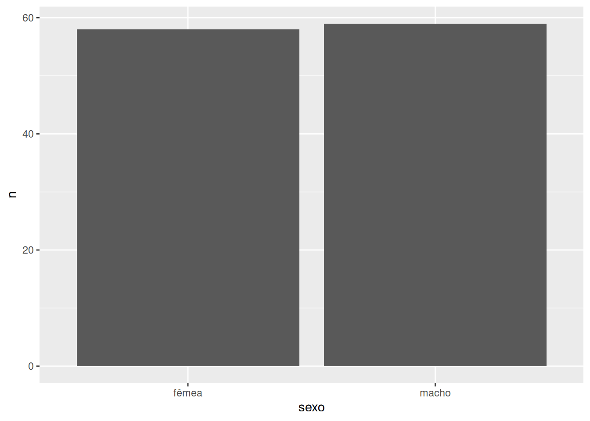
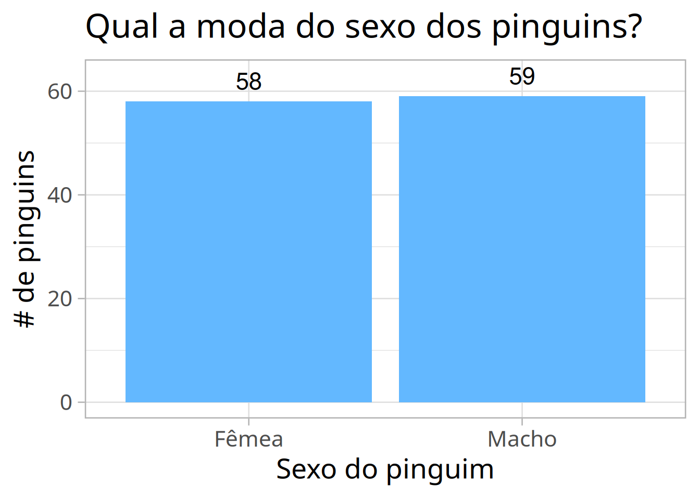

Os exercícios da aula de análise descritiva foram propostos com o uso dos dados pinguins do pacote dados em mente. Segue abaixo a solução para cada um dos exercícios.
1. Filtre a base para manter apenas as observações do ano de 2009.
# Exercício 1 da aula 4library(dados)library(dplyr)pinguins_2009 <- pinguins |>filter(ano ==2009)pinguins_2009
1
Carregar pacotes necessários.
2
Filtrar a base apenas com as documentações do ano de 2009. Atribuir o subconjunto no objeto pinguins_2009.
2. Verifique se a variável comprimento_bico da base de dados segue uma distribuição normal através de um histograma e um teste de normalidade de Shapiro-Wilk.
# Exercício 2 da aula 4library(ggplot2)pinguins_2009 |>ggplot(aes(x = comprimento_bico)) +geom_histogram(fill ="lightcoral") +theme_classic(16, "Arial") +labs(x ="Comprimento do bico (em mm)",y ="# de pinguins")

Ao observar o histograma, parece que estamos trabalhando com uma distribuição bimodal na variável comprimento_bico. Ou seja, observamos dois “picos” distintos que representariam duas modas presentes no vetor. Agora, seguimos para o teste de Shapiro-Wilk para verificar a normalidade dos dados:
# Continuação do exercício 2 da aula 4pinguins_2009 |>pull(comprimento_bico) |>shapiro.test()
Shapiro-Wilk normality test
data: pull(pinguins_2009, comprimento_bico)
W = 0.9573, p-value = 0.0008205
Se nos recordamos da aula, vamos lembrar que a hipótese nula (\(H_0\)) do teste de Shapiro-Wilk é de que os dados seguem uma distribuição normal, ou seja, esperamos um p-valor maior que 0,05 para não rejeitar a hipótese nula. No resultado acima, observamos que o p-valor foi de 0,0008. Logo, assumimos que provavelmente o vetor do comprimento_bico não segue uma distribuição normal, como consideramos a partir do histograma.
3. Com a função count(), verifique a frequência da variável sexo na base de dados.
# Exercício 3 da aula 4# Contar frequência do sexo dos pinguinspinguins_2009 |>count(sexo)
# A tibble: 3 × 2
sexo n
<fct> <int>
1 fêmea 58
2 macho 59
3 <NA> 3
Podemos observar que a variável sexo na base dos pinguins_2009 possui três valores ausentes. Caso queiramos remover os pinguins sem valor na variável sexo da base de dados, podemos criar um subconjunto apenas com as observações sem NA nessa coluna:
pinguins_2009_sem_na_sexo <- pinguins_2009 |>filter(!is.na(sexo))# Notem que agora a base de dados tem apenas 117 linhas (3 pinguins foram removidos)pinguins_2009_sem_na_sexo
Lembram que podemos transformar a contagem da frequência em um gráfico de barras?
# Vamos checar a nova contagem nesse subconjuntopinguins_2009_sem_na_sexo |>count(sexo)
# A tibble: 2 × 2
sexo n
<fct> <int>
1 fêmea 58
2 macho 59
# Com o código abaixo, criamos um gráfico de barras do sexopinguins_2009_sem_na_sexo |>count(sexo) |>ggplot(aes(x = sexo, y = n)) +geom_col()

Creio que podemos deixar esse gráfico um pouco mais elegante:
# Vamos deixar ele um pouco mais bonito...pinguins_2009_sem_na_sexo |>count(sexo) |>mutate(sexo = stringr::str_to_title(sexo)) |>ggplot(aes(x = sexo, y = n, label = n)) +geom_col(fill ="steelblue1") +geom_text(nudge_y =4,size =6) +theme_light(20, "IBM Plex Sans") +labs(x ="Sexo do pinguim",y ="# de pinguins",title ="Qual a moda do sexo dos pinguins?")

4. Com a função summarise(), calcule a média, mediana e desvio padrão da variável comprimento_nadadeira.
Notem que usamos o argumento na.rm = TRUE para sinalizar ao R que, em caso de presença de valores ausentes na variável, queremos que as medidas sejam calculadas ignorando os NA e considerando apenas os valores válidos.